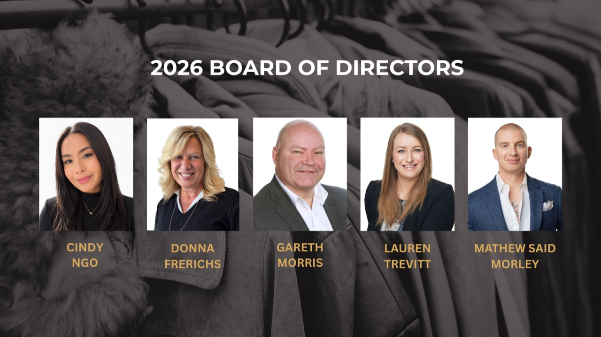

Our story
In 2009 Mathew came up with the idea to start Coats For Calgary while volunteering at the Calgary Food Bank. With Mathew's vast database in Calgary and his career in Real Estate, he went to work contacting businesses throughout the city in the hopes of partnering together to collect warm jackets from the beginning of fall, into the new year when the coats are donated.
After witnessing the significant lack of warm clothing during the harsh winter months, I wanted to try and help in any way I could. To do something impactful and to make a difference for the people who need it most.
2026 marks the sixteenth annual jacket drive with the hopes to surpass our previous impressive record of over 10,000 lbs of jackets donated. With over 80 expected supporters, drop-off locations and businesses involved this year, the goal is to surpass that amount, a number Mathew never thought would be obtainable when first kicking off the jacket drive 16 years ago.
We live in such an incredible city with so many giving and generous people. The least we can do is try and lend a helping hand to those less fortunate in our city. To me, coming together for the greater good and giving back is the definition of community. I am proud to be a part of this community and honoured to be able to continue this initiative year over year.
Meet the 2026 Board of Directors

Mathew Said Morley · Founder
In 2009, Mathew founded Coats for Calgary after witnessing firsthand the growing need for warm clothing during Calgary's harsh winters. What began as a small community effort has grown into an annual city-wide initiative that has collected and distributed thousands of jackets to those in need. Driven by compassion and community spirit, Mathew continues to lead the campaign each year, uniting local businesses and Calgarians in the simple but powerful act of giving warmth.
Lauren Trevitt · Chair
Lauren joined Coats in Calgary in 2020 after she saw the amazing work that Mathew was doing and realized that she could lend a hand. Born and raised in Calgary, Lauren knows how harsh our winters can be and the immense need for warm coats for Calgarians. With a passion to help others, Lauren brings her background in event planning and organizational skills to continue to support and grow Coats for Calgary.
Donna Frerichs · Director
Donna has been involved with Coats for Calgary for the last 2 years and brings heart, energy, and a love of organization to everything she does. Passionate about giving back, she enjoys volunteering and making a difference in her community. Outside of work, she loves watching hockey, the outdoors, travel, family, friends, and all animals - fuelled by coffee and curiosity, she believes life is best with kindness, adventure, and a little fun.
Cindy Ngo · Director
Cindy Ngo is the Associate Director of Development at the Schulich School of Engineering at the University of Calgary. Before joining the university, she served as Manager, Fund Development at the Calgary Drop-In Centre for five years, leading fundraising initiatives and building partnerships that supported programs for vulnerable Calgarians. During her time at the Drop-In Centre, she proudly championed numerous community-driven initiatives, including Coats for Calgary, a program that remains especially near and dear to her heart. Cindy is passionate about connecting donors, organizations, and communities to create meaningful and lasting impact. When she's not connecting donors and community partners to meaningful causes, Cindy runs a local meal prep delivery company and is easily fuelled by good food, good drinks, and good conversation.
Gareth Morris · Director
Gareth is a long-time Calgarian who believes deeply in giving back and supporting those in need. Volunteerism was instilled in him early on, and for nearly 50 years he has contributed to causes across the globe, from developing sports programs in refugee camps in Angola to improving infrastructure for an orphanage in China. Locally, Gareth has served in governance, charitable oversight, and financial management roles for not-for-profit organizations, always focused on creating meaningful impact. He's proud to support Coats for Calgary and its mission to bring warmth and compassion to those who need it most. Beyond his volunteer work, Gareth is a husband, father, and Manager and Realtor for a large real estate brokerage, bringing strong leadership, organization, and community values to everything he does.
Get involved
For more information or to get involved, email give@coatsforcalgary.ca.